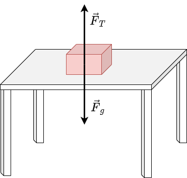
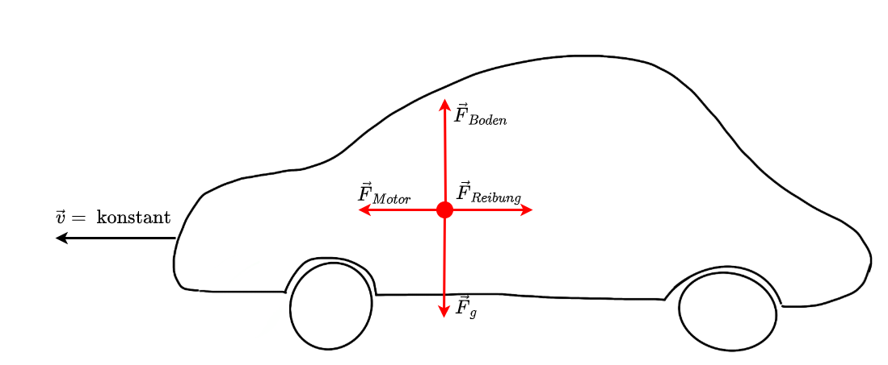
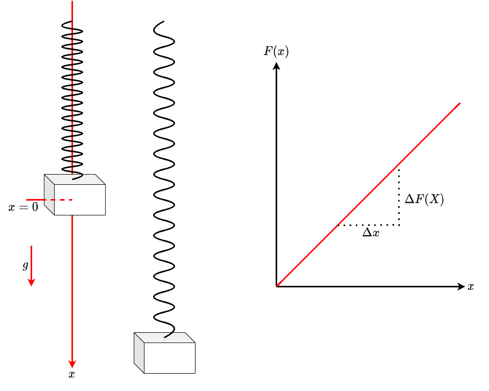
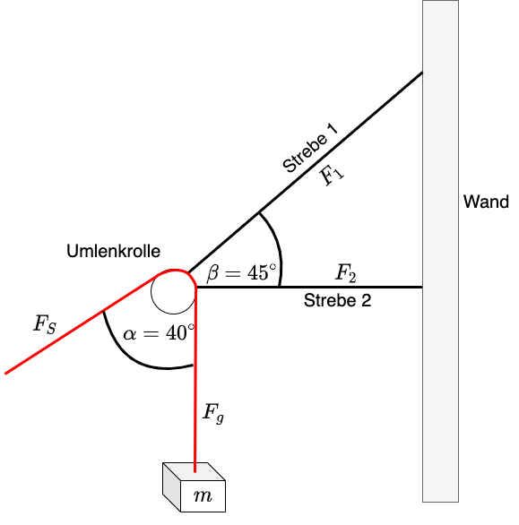
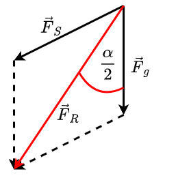
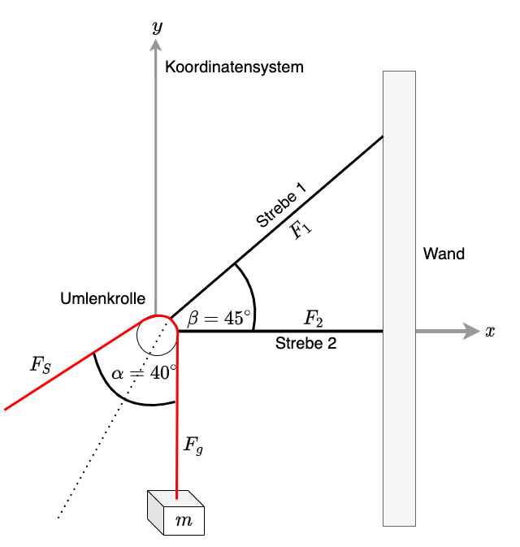
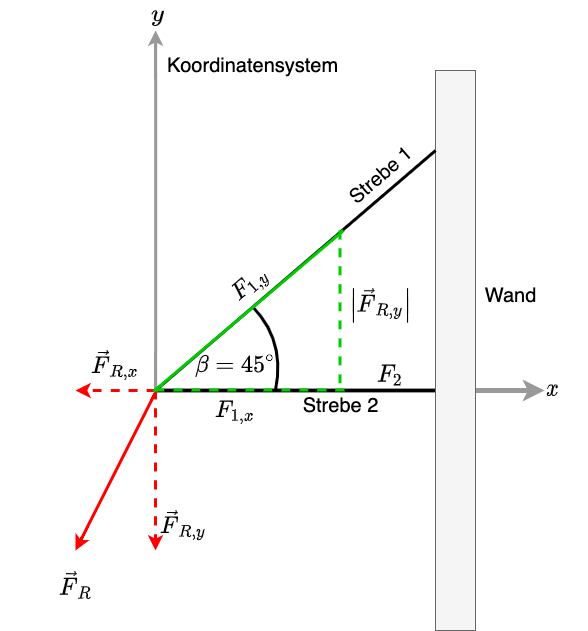

3.5. Statik#
Die Statik beschäftigt sich mit Massen, die unbewegt, also in Ruhe sind. In einem statischen Kräftegleichgewicht ist die Summe aller angreifenden Kräfte = 0. Es gilt also
\(\vec{F}_{ges} = \sum_{i=1}^N \vec{F}_i = \vec{0}\)
Diese Bedingung kann genutzt werden, um Kräfte in Relation zueinander zu setzen und somit Bedingungen zwischen physikalischen Größen herzuleiten.
Beispiel


Fig. 3.3 Die Kiste auf dem Tisch befindet sich im statischen Gleichgewicht.#
Damit gilt für die angreifenden Kräfte
\(\vec{F}_{ges} = 0 = \vec{F}_{Tisch} + \vec{F}_{Gewicht} \Rightarrow \vec{F}_{Tisch} = - \vec{F}_{Gewicht} \)
Äquivalente Betrachtungen können durchgeführt werden für Massen, die sich mit konstanter Geschwindigkeit bewegen, denn aus der Kinematik ist bekannt, dass
\(v = v_0\) wenn \(a = 0\)
Auch hier ist die resultierende Gesamtkraft \(=0\), eine resultierende Gesamtkraft \(\not =0\) würde zu einer Geschwindigkeitsänderung führen.


Fig. 3.4 Das Auto fährt mit konstanter Geschwindigkeit, die Summe der resultierenden Kräfte ist \(=0\).#
3.5.1. Anwendung: Messung von Kräften#
Die Kenntnis über die Addition von Kräften kann beispielsweise in einer einfachen Federwaage zur Messung von Kräften genutzt werden. Eine Federwaage besteht aus einer Feder, deren Federkonstante \(k\) bekannt ist. Die Federkonstante definiert die Ausdehnung der Feder wenn eine Kraft angreift. Für Federwaagen wird eine Feder eingesetzt, deren Federkonstante über den zugelassenen Anwendungsbereich konstant ist.


Fig. 3.5 Prinzip einer Federwaage.#
Wird die Feder ausgedehnt, wirkt eine der Ausdehnung entgegengesetzte Kraft
\(\vec{F}_F = - k \cdot \vec{x}\)
Eine an die Waage angehängte Masse bewirkt eine nach unten gerichtete Gewichtskraft
\(\vec{F}_g = m \cdot \vec{g}\)
Da es sich um ein eindimensionales Problem handelt, müssen nur die Komponenten entlang der x-Achse betrachtet werden. Damit ist
\(F_{F,x} = - k \cdot x\)
\(F_{g,x} = m \cdot g\)
Wenn die Masse an der Federwaage im statischen Gleichgewicht ist, gilt:
\(\sum F_i = 0 = F_{F,x} + F_{g,x} \Leftrightarrow - k \cdot x + F_{g,x} = 0 \Leftrightarrow F_{g,x} = k \cdot x \)
Durch Messung der Auslenkung \(x\) kann dann die Gewichtskraft bestimmt werden. Über die bekannte Erdbeschleunigung \(g\) kann dann die Masse berechnet werden
\( m \cdot g = k \cdot x \Leftrightarrow m = \frac{k \cdot x}{g}\)
Im Allgemeinen, insbesondere ausserhalb des Anwendungsbereiches, ist die Federkonstante nicht konstant und eine einfache derartige Berechnung ist dort nicht möglich.
3.5.2. Anwendung: Berechnung statischer Belastung#
Mit Hilfe der Statik lassen sich auch komplizierte Situationen betrachten und die statischen Kräfte auf einzelne Bauteile analysiert werden. Beispielsweise seien in folgender Anordnung die mechanischen Kräfte auf die Streben der in Abbildung 3.6 dargestellten Wandhalterung zu berechnen:


Fig. 3.6 Darstellung der Kräfte an einer Wandhalterung.#
Hier hängt eine Masse über eine Umlenkrolle an einem Seil. Die Wandhalterung besteht aus zwei Streben auf die jeweils eine Kraft wirkt. Diese beiden Kräfte \(F_1\) und \(F_2\) gilt es zu berechnen.
Mit Hilfe des Seils kann die Masse auf- und abbewegt werden. Zu jedem bestimmten Zeitpunkt herrscht entlang des Seils ein statisches Kräftegleichgewicht, die Masse bewirkt eine Gewichtskraft \(F_g\), das Seil kompensiert diese Kraft durch die Seilkraft \(F_S\). Wäre das nicht so, würde das Gewicht nach unten abstürzen. Es gilt also entlang des Seils für die Beträge dieser beiden Kräfte \(F_g = F_S\).
Auf die Wandhalterung wirkt die Resultierende der beiden Kräfte \(\vec{F}_g + \vec{F}_S\). Beide Kräfte sind gegenüber der Resultierenden \(\vec{F}_R\) um einen Winkel von \(\frac{\alpha}{2}\) verschoben. In \(\vec{F}_R\)-Richtung wirkt also jeweils der Anteil \(F_g \cdot \cos\left( \frac{\alpha}{2} \right)\)


Fig. 3.7 Resultierende Kraft an Wandhalterung.#
Mit \(\vec{F}_g = m \cdot \vec{g}\) und \(F_g = F_S\) ist also
\(F_R = 2 \cdot F_g \cdot \cos\left( \frac{\alpha}{2} \right)= 2 \cdot m \cdot g \cdot \cos\left( \frac{\alpha}{2} \right)\)
Zur Betrachtung der Kraft auf die Wandhalterung muss zunächst ein Koordinatensystem festgelegt werden. In diesem Beispiel wird es so gewählt, dass die x-Richtung entlang der Strebe 2 verläuft, die y-Richtung senkrecht dazu. (siehe Abbildung 3.8)


Fig. 3.8 Darstellung der Kräfte an einer Wandhalterung.#
Nun wird die resultierende Kraft \(\vec{F}_R\) in die Komponenten bezüglich des gewählten Koordinatensystems zerlegt.
In x-Richtung wirkt
\(\left|F_{R,x} \right| = F_R \cdot \sin \left( \frac{\alpha}{2} \right) = 2 \cdot m \cdot g \cdot \cos\left( \frac{\alpha}{2} \right)\cdot \sin \left( \frac{\alpha}{2} \right)\)
In y-Richtung wirkt
\(\left|F_{R,y} \right| = F_R \cdot \cos \left( \frac{\alpha}{2} \right) = 2 \cdot m \cdot g \cdot \cos^2\left( \frac{\alpha}{2} \right)\)


Fig. 3.9 Aufteilung der Kraft in y-Richtung#
Die Kraft in y-Richtung wird über Strebe 1 aufgenommen. Zusätzlich wird ein Teil der Kraft in x-Richtung von Strebe 1 aufgenommen. Es gilt
\(\sin \left( \beta \right) = \frac{\left|F_{R,y} \right|}{F_1} \Leftrightarrow F_1 = \frac{\left|F_{R,y} \right|}{\sin \left( \beta \right)} \)
\(\cos \left( \beta \right) = \frac{F_{1,x}}{F_1} \Leftrightarrow F_{1,x} = F_1 \cdot \cos \left( \beta \right)\)
wobei \(F_{1,x}\) der Teil ist, der von Strebe 1 in x-Richtung aufgenommen wird. Damit ist
\(F_1 = \frac{\left|F_{R,y} \right|}{\sin \left( \beta \right)} = \frac{F_R \cdot \cos\left( \frac{\alpha}{2} \right)}{\sin \left( \beta \right)} = 2 \cdot m \cdot g \cdot \frac{\cos^2\left( \frac{\alpha}{2} \right)}{\sin \left( \beta \right)}\)
\(F_{1,x} = F_1 \cdot \cos \left( \beta \right) = 2 \cdot m \cdot g \cdot \frac{\cos^2\left( \frac{\alpha}{2} \right)}{\sin \left( \beta \right)} \cdot \cos \left( \beta \right) = 2 \cdot m \cdot g \cdot \frac{\cos^2\left( \frac{\alpha}{2} \right)}{\tan \left( \beta \right)}\)
\(F_2 = \left|F_{R,x} \right| - F_{1,x} = 2 \cdot m \cdot g \cdot \cos\left( \frac{\alpha}{2} \right)\cdot \sin \left( \frac{\alpha}{2} \right) - 2 \cdot m \cdot g \cdot \frac{\cos^2\left( \frac{\alpha}{2} \right)}{\tan \left( \beta \right)}\)
Für \(\alpha = 40^\circ\), \(\beta = 45^\circ\) und \(m = 50 \, kg\) ergibt dies
\(F_1 \approx 1225 \, N\)
\(F_2 \approx -551 \, N\)
Das negative Vorzeichen zeigt, dass Strebe 2 auf Druck belastet wird.
Für \(\alpha = 90^\circ\), \(\beta = 45^\circ\) und \(m = 50 \, kg\) ergibt dies
\(F_1 \approx 694 \, N\)
\(F_2 = 0 \, N\)
Die resultierende Kraft ist hier gerade in dieselbe Richtung wie die Strebe 1 ausgerichtet. Diese nimmt daher in diesem Fall die gesamte Kraft auf.